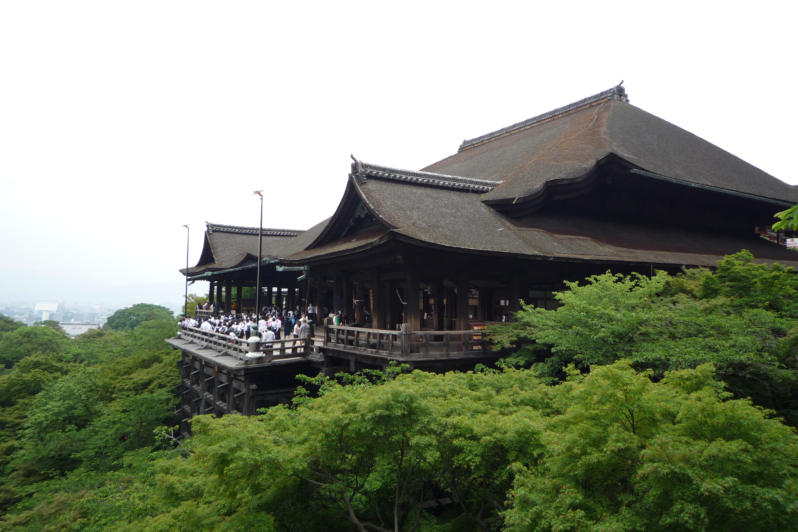

Explore Higashiyama.
Start above the city at Kiyomizu-dera, then wander downhill through streets lined with traditional shops. Higashiyama puts temple views and small discoveries within the same walk. Take your time browsing ceramics, stop for something sweet, and enjoy the changes in scenery as you make your way toward Gion.

A walking route to try
Kiyomizu-dera's wooden stage reaches out over the hillside, giving you a wide view of the trees and city beyond. The approach is part of the experience, with sloping lanes that invite you to stop and look around. This suggested route keeps your day in one area, with time for breaks instead of rushing across Kyoto.
See Kiyomizu-dera's official visitor guide- Kiyomizu-dera: Begin with the temple grounds and the view from the main hall.
- Sannenzaka and Ninenzaka: Walk down the historic lanes and browse the shops.
- Yasaka Shrine: Continue north toward the shrine beside Gion.
- Gion: Finish with a stroll along public streets and a relaxed meal.
Leave room for a taste
A break for tea can be as enjoyable as the next sightseeing stop. Try the earthy taste of matcha with a small sweet, or sit down for a warm tofu dish. Around Kyoto, food shops and tea houses offer a reason to pause, rest your feet, and enjoy something you might not usually order at home.
- Order matcha and a seasonal Japanese sweet at a tea house.
- Try yatsuhashi, a Kyoto sweet often flavored with cinnamon.
- Make time for a meal of yudofu, a gently simmered tofu dish.
Before you go
How can I get around Kyoto?
Use trains and subways for longer trips, then walk the final stretch where practical. Check the official Kyoto transport guide for routes to each neighborhood.
Where can I check current visitor information?
The Kyoto City Official Guide has seasonal ideas and visitor updates. Check each attraction's own website for its current opening times before you visit.